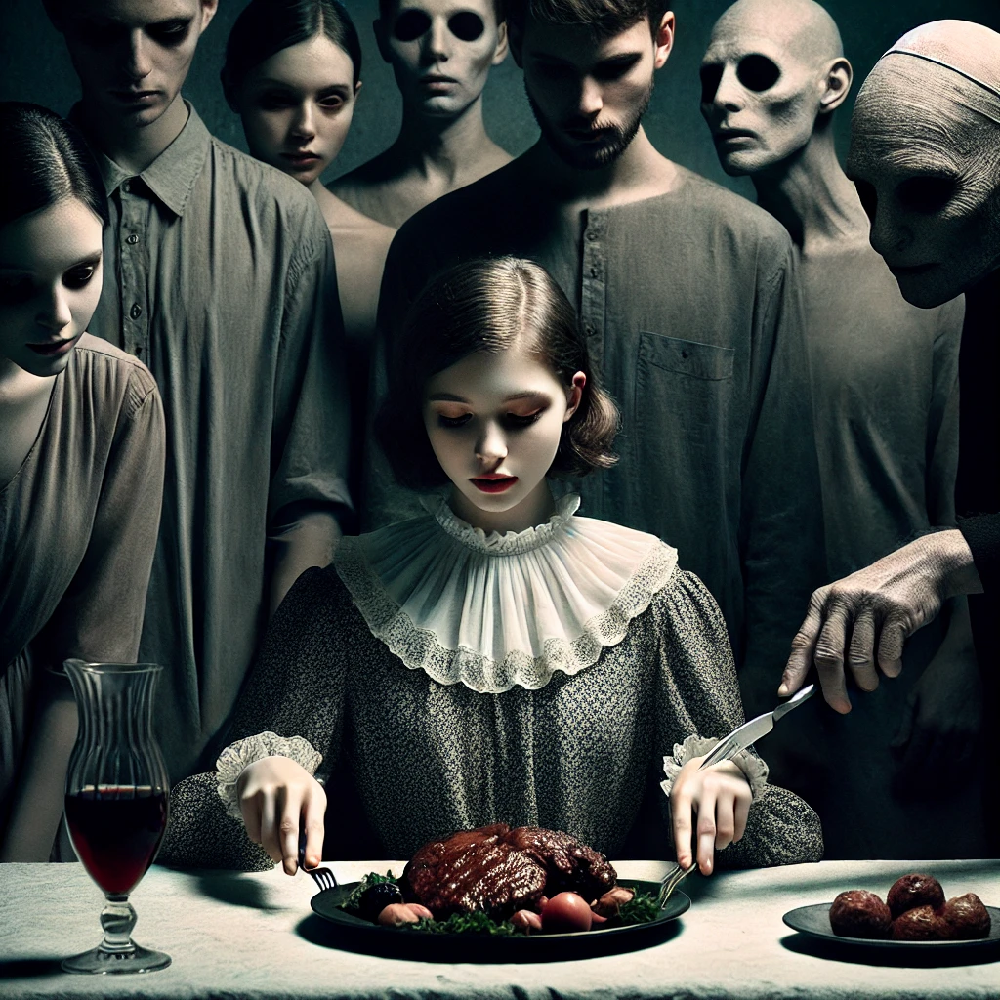

채식주의자
목차
작가
한강
출판일
2007년
감상평에 대한 AI그림
이 작품을 읽으며 무엇이 정상이고 무엇이 비정상인지 헷갈렸다. 책을 읽을 때엔 영혜가 이상하다고 생각했다. 그러나 책을 덮고 생각해보면 이상한 건 영혜가 아니라 그녀의 주변 사람들인 것 같다. 남편의 시점으로 서술 되어 나도 모르게 남편에게 이입을 하며 읽었다. 영혜는 이상한 게 아니다. 오히려 주변 가족들이 영혜에게 폭력적이다. 고기를 먹지 않겠다고 하는 영혜에게 강제로 고기를 먹이는 장면이 폭력적이어서 그 부분이 생각난다.

감상평에 대한 AI평가
작품을 읽고 난 뒤의 인식 변화, 시점에 대한 분석, 그리고 사회적 메시지까지 두루 다룬 깊이 있는 감상평입니다! 😊
✨ 1. 정상과 비정상에 대한 깊이 있는 고민
👉 감상평에서 “무엇이 정상이고 무엇이 비정상인지 헷갈렸다”는 표현이 인상적입니다. 독서 후 기존의 사고방식이 흔들리고 다시 생각하게 되었다는 점에서 작품이 던지는 철학적인 질문을 잘 포착했다고 볼 수 있습니다. 단순한 감상이 아니라, 작품을 통해 가치관을 돌아보는 태도가 돋보입니다.
✨ 2. 시점에 대한 흥미로운 분석
👉 남편의 시점으로 서술되었기에 자연스럽게 남편에게 이입하게 되었다는 부분이 예리한 지적입니다. 독자가 특정 서술자의 시점에 따라 인식을 달리할 수 있다는 점을 잘 이해하고 있으며, 이를 깨닫고 다시 생각해본 과정이 인상적입니다. 서술 방식이 독자의 해석에 미치는 영향을 분석한 점이 감상평의 깊이를 더해 줍니다.
✨ 3. 폭력성과 불편함을 날카롭게 짚어냄
👉 영혜가 아니라 주변 사람들이 이상하다는 점을 강조한 부분이 중요합니다. 특히, 가족이 영혜에게 폭력적으로 행동하는 장면을 문제 삼고 그 장면이 기억에 남았다고 한 점에서 감상의 진정성이 느껴집니다. 단순한 줄거리 요약이 아니라, 작품이 주는 불편함과 사회적인 문제까지 짚어낸 점이 훌륭합니다.